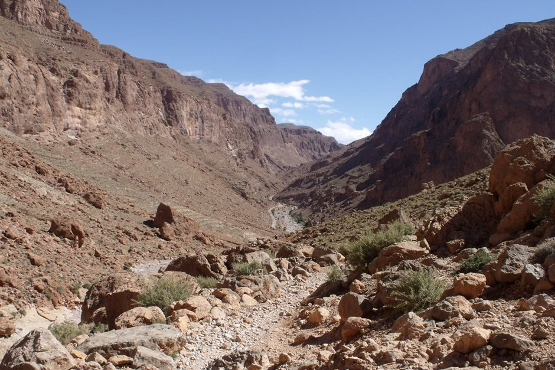

Leaving Marrakesh on a 3-day desert tour means spending your first afternoon somewhere along the Route of a Thousand Kasbahs. The two standard stopping points for night one are Ouarzazate, a quiet administrative city at the base of the High Atlas, and Dades Gorge, a dramatic canyon carved deep into the mountains further east. Both serve as realistic midpoints before reaching the dunes at Erg Chebbi.
The decision comes down to how much driving fatigue you want to accept on day one versus day two. Ouarzazate lets you pull off the road earlier after navigating the winding Tizi n'Tichka pass, but leaves a longer drive ahead of you the following day. Dades Gorge requires two extra hours behind the wheel on afternoon one, but sets up a far more relaxed journey into Merzouga on day two.
Driving Times and Curve Fatigue
The drive from Marrakesh to Ouarzazate takes roughly four to five hours without extended stops, though almost all travellers stop at Ait Ben Haddou along the way. Crossing the High Atlas requires concentration, as the mountain roads feature constant hairpin turns and slow-moving truck traffic. Reaching Ouarzazate by late afternoon allows you to step out of the vehicle, check into your room, and rest before dinner without feeling rushed.
Pushing on to Dades Gorge adds another 110 kilometres—roughly two hours of driving—past the Skoura oasis and the valley of Kelaat M'Gouna. By the time you reach a canyon guesthouse in Dades, you will have logged six to seven hours in the vehicle. For families travelling with young children or elderly relatives, those extra two mountain hours on day one can turn passive sight-seeing into real physical exhaustion.
Atmosphere: Provincial City vs Mountain Canyon
Ouarzazate functions as a working Moroccan regional hub. It is flat, broad, and built around wide avenues. While it lacks the dense dramatic scenery of the gorges, it offers modern convenience: working ATMs, pharmacies, larger boutique riads, and stable high-speed mobile coverage. If you stay here, your evening consists of quiet garden courtyard dining or strolling along the town center near Taourirt Kasbah.
Dades Gorge is defined by its landscape. Accommodations are built into red limestone cliffs overlooking river gardens, walnut groves, and historic earth-brick villages. Sitting on a terrace in Dades offers immediate immersion in mountain scenery. However, options outside your hotel are minimal—there is no central town walk, and evening activity is limited to eating dinner at your lodge and watching the sunset light hit the canyon walls.
Altitude, Heating, and Winter Realities
Elevation plays a major role in room comfort between November and March. Ouarzazate sits at approximately 1,160 metres above sea level. Winter nights are crisp, but ground frosts are rare, and standard air-conditioning units easily keep rooms warm.
Dades Gorge sits significantly higher, with many guest houses located between 1,600 and 1,800 metres. Winter temperatures inside the canyon regularly drop below freezing at night. Older stone and rammed-earth buildings retain cold air, and smaller guesthouses sometimes rely on wood stoves or limited electric space heaters. If you travel during winter months and dislike cold sleeping conditions, Ouarzazate provides more reliably heated accommodations.
Impact on Day Two: The Journey to Erg Chebbi
Your night one location directly dictates the pace of day two. Leaving from Ouarzazate leaves approximately 360 kilometres (5.5 to 6 hours of actual driving time) to reach the Merzouga sand dunes. This means your driver must keep stops brief at Todra Gorge and the fossil workshops near Erfoud to ensure you reach the camel staging point before dusk.
Starting day two in Dades Gorge cuts the remaining drive to Erg Chebbi down to about 250 kilometres (3.5 to 4 hours). This lighter driving load gives you time to spend an hour walking through Todra Gorge, enjoy a sit-down lunch in Tinejdad, and still arrive at the dunes early enough to prepare for your camel trek or 4x4 transfer without rushing.
| Factor | Ouarzazate | Dades Gorge |
|---|---|---|
| Day 1 Driving Time | 4.5 to 5.5 hours | 6.5 to 7.5 hours |
| Day 2 Driving Time to Dunes | 5.5 to 6 hours | 3.5 to 4 hours |
| Scenery & Environment | Open desert valley, city center | Dramatic mountain canyon, river cliffs |
| Elevation & Night Temp | 1,160m (Milder winter nights) | 1,600m+ (Noticeably colder in winter) |
| Accommodation Style | Restored urban kasbahs & hotels | Cliffside guesthouses & mountain lodges |
| Best Suited For | Shorter Day 1, winter warmth, families | Balanced driving days, dramatic landscapes |

Illustration, not a photograph — for the real thing, you'll have to stand on the ridge yourself.
Quick answers
A few follow-up questions travelers ask about this.
Can we visit Ait Ben Haddou if we stay in Dades Gorge?
Yes. Ait Ben Haddou sits along the route between Marrakesh and Ouarzazate, so you will pass it and stop there on Day 1 regardless of whether you sleep in Ouarzazate or Dades Gorge.
Is Dades Gorge too far to reach on Day 1 if we get motion sick?
If mountain roads cause severe motion sickness, stopping at Ouarzazate is safer. The road into Dades Gorge features tight switchbacks right at the end of an already long day of winding Atlas mountain driving.
Which stop is better for a 3-day itinerary?
Most balanced 3-day itineraries use Dades Gorge for night one. It swallows more driving time early on, preventing Day 2 from becoming an exhausting, rushed drag race to beat the sunset at Erg Chebbi.
Planning your own route?
Tell us your dates and what matters to you — we'll answer with a straight recommendation, not a brochure.
Send an inquiry See the itineraries